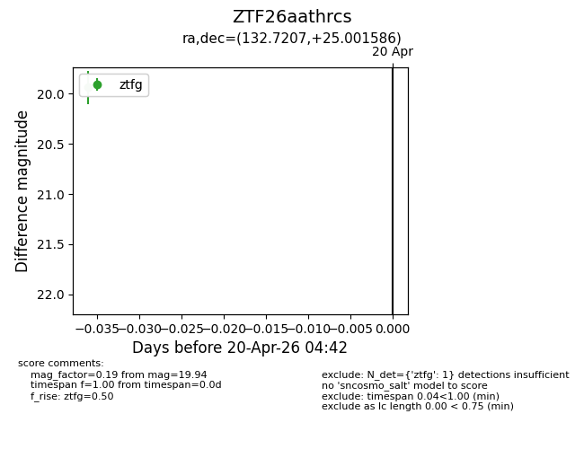
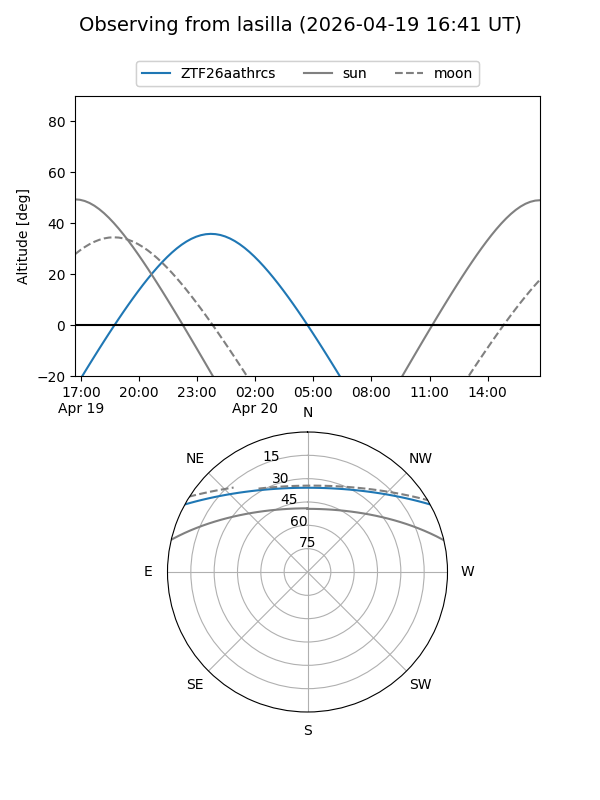
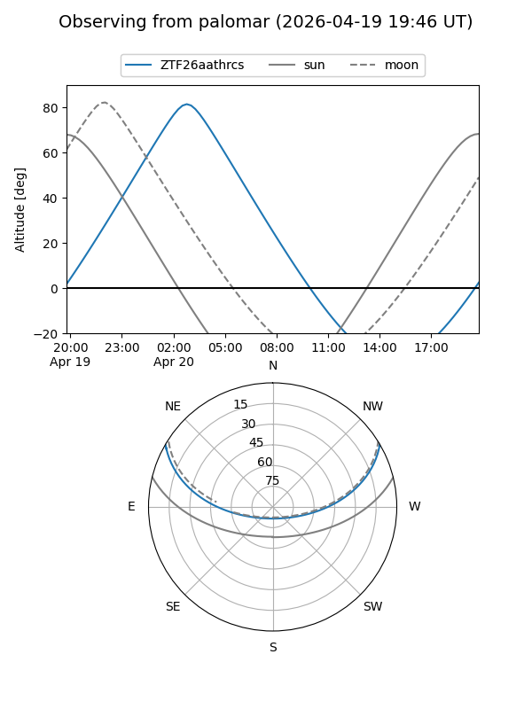

ZTF26aathrcs
Target ZTF26aathrcs at 2026-04-20 04:52
Aliases and brokers:
FINK: link
Lasair: link
ALeRCE: link
alt names
ZTF26aathrcs (ztf,fink_ztf)
Coordinates:
equatorial (ra, dec) = 132.7207,+25.00159
equatorial (HMS+DMS) = 08:50:52.97,+25:00:05.71
galactic (l, b) = (200.7003,+36.46429)
Flags:
Photometry:
last ztfg=19.94
1 ztfg detections
Lightcurve

Visibility


Additional plots